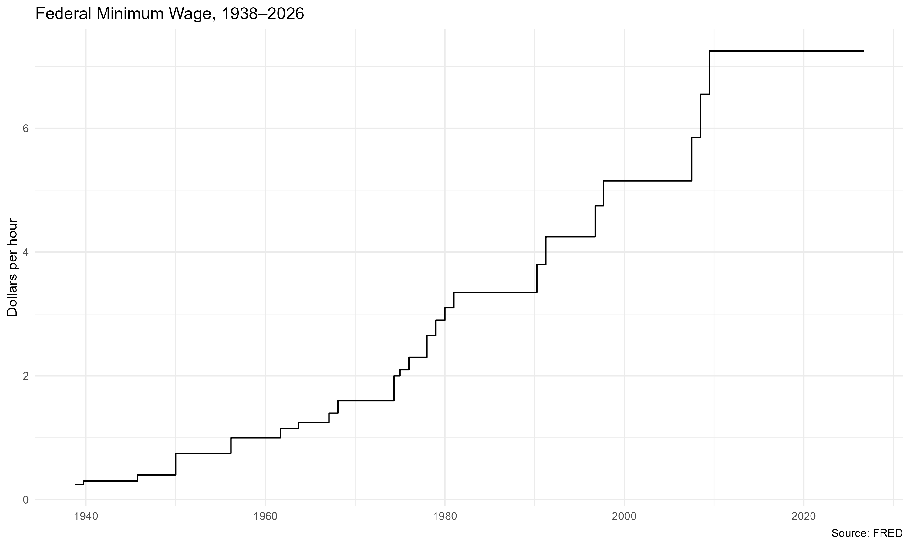
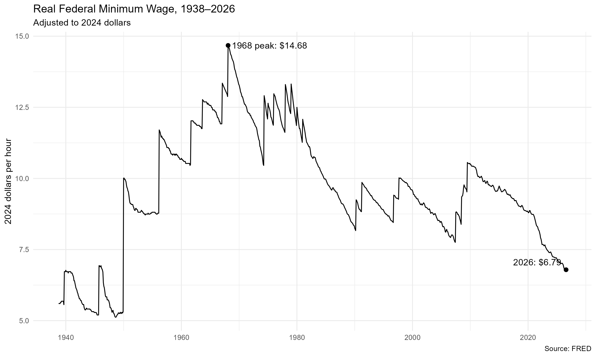
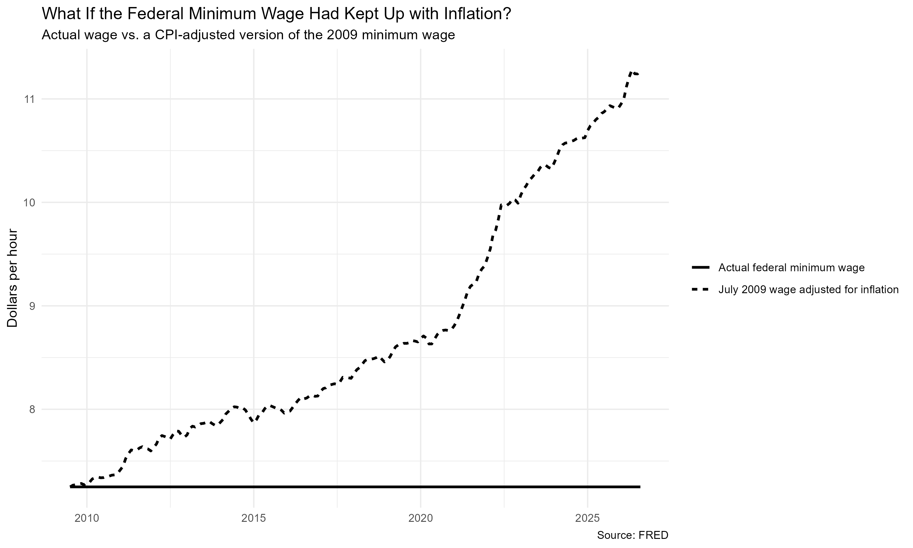

How Much Has the Federal Minimum Wage Lost in Purchasing Power?
labor-economics
inflation
data-visualization
Introduction
The federal minimum wage is still $7.25 per hour, the same rate set in July 2009. I knew it had not changed for a long time, but I wanted to see how different that number looks once inflation is taken into account.
I use monthly FRED data to look at the minimum wage in three ways. First, I plot the nominal federal minimum wage since 1938. Then I adjust it for inflation. Finally, I ask a simpler counterfactual question: if the $7.25 rate from July 2009 had only kept pace with CPI, where would it be now?
Data
I downloaded two monthly series directly from FRED using the fredr package: the federal minimum wage (FEDMINNFRWG) and the Consumer Price Index for All Urban Consumers (CPIAUCNS).
I originally planned to express the real minimum wage in 2025 dollars. While checking the data, I found that the October 2025 CPI observation was missing in the FRED data I downloaded. Rather than use an incomplete year as the base, I switched to 2024, which has all twelve monthly observations.
The real minimum wage is calculated as:
\[ \text{Real Minimum Wage}_t = \text{Nominal Minimum Wage}_t \times \frac{\text{Average CPI in 2024}}{\text{CPI}_t} \]
This puts wages from different years into the same purchasing-power units.
How Has the Nominal Minimum Wage Changed?
The first figure shows the federal minimum wage in current dollars.
The step pattern is what I would expect from a policy variable. The wage stays fixed for long periods and then jumps when a new federal rate takes effect.
One detail I noticed from the monthly data is that the minimum wage was still $6.55 in June 2009 and increased to $7.25 in July. It has remained at $7.25 ever since.
That $7.25 line looks flat after 2009, which is exactly why I wanted to adjust it for inflation.
What Changes After Adjusting for Inflation?
The second figure shows the same minimum wage after converting it to 2024 dollars.

The highest real value in the series occurs in February 1968, when the $1.60 federal minimum wage was worth about $14.68 in 2024 dollars.
After that, the real series repeatedly rises when the nominal minimum wage is increased and then falls as prices continue to increase. By August 2026, $7.25 had a real value of only about $6.79 in 2024 dollars.
What surprised me more was that the peak came all the way back in 1968. The nominal wage has gone up since then, but that does not mean workers at the federal minimum wage can buy more with it.
What If $7.25 Had Kept Up with Inflation?
I then used July 2009 as a starting point and asked what the federal minimum wage would look like if it had increased at the same rate as CPI.
\[ \text{Inflation-Adjusted Wage}_t = 7.25 \times \frac{\text{CPI}_t}{\text{CPI}_{July\ 2009}} \]

Both lines begin at $7.25 in July 2009. After that, the actual federal minimum wage stays flat while the CPI-adjusted line keeps rising.
By August 2026, maintaining the purchasing power of the July 2009 wage would require about $11.28 per hour. The actual federal minimum wage was still $7.25.
I use $11.30 only as a purchasing-power comparison, not as an estimate of what the minimum wage should be.
Takeaway
I already knew the federal minimum wage had been stuck at $7.25 since 2009. What I didn’t expect was how much its purchasing power had fallen. In 2024 dollars it’s now worth less than half of what it was in 1968.
One caveat is that I only looked at the federal rate, and plenty of states set a higher one, so this isn’t what every minimum-wage worker actually faces. Next time I’d want to bring state minimums in.
Source
Federal Reserve Bank of St. Louis, FRED.
The data were downloaded directly in R using the fredr package.
Series used:
- Federal Minimum Hourly Wage (
FEDMINNFRWG) - Consumer Price Index for All Urban Consumers (
CPIAUCNS)